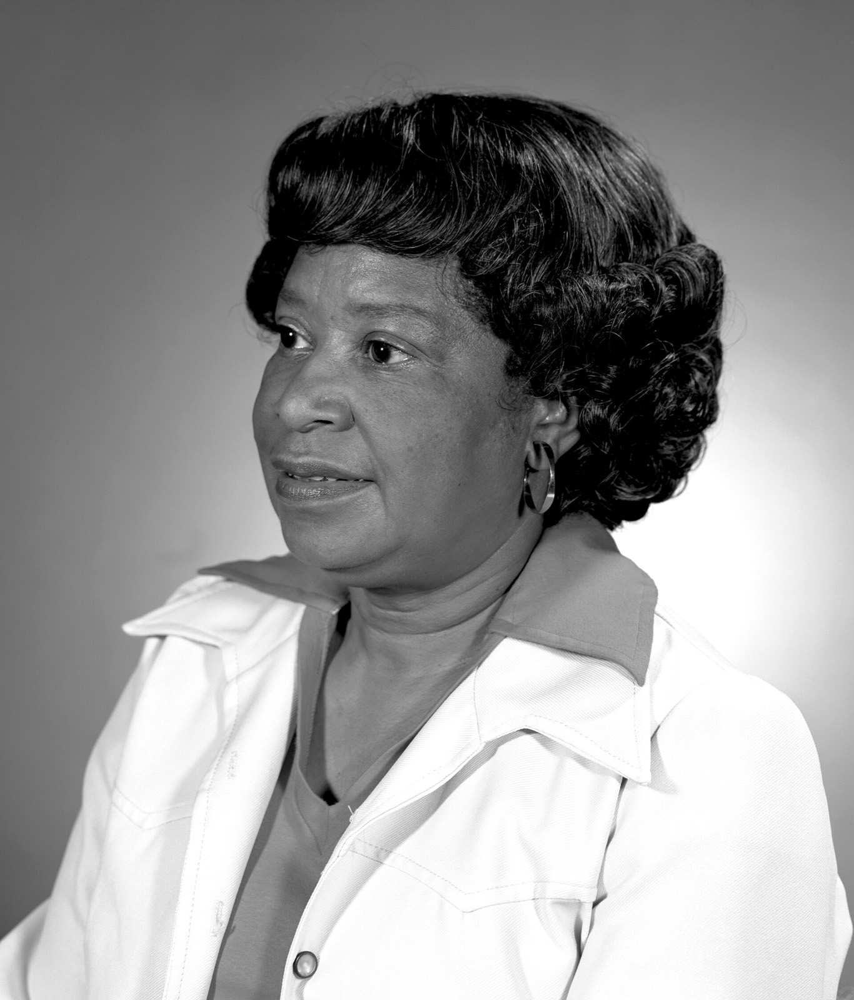
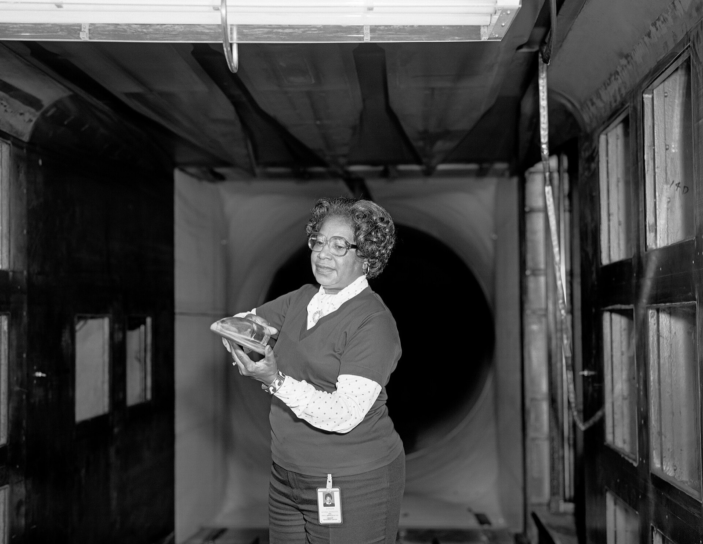
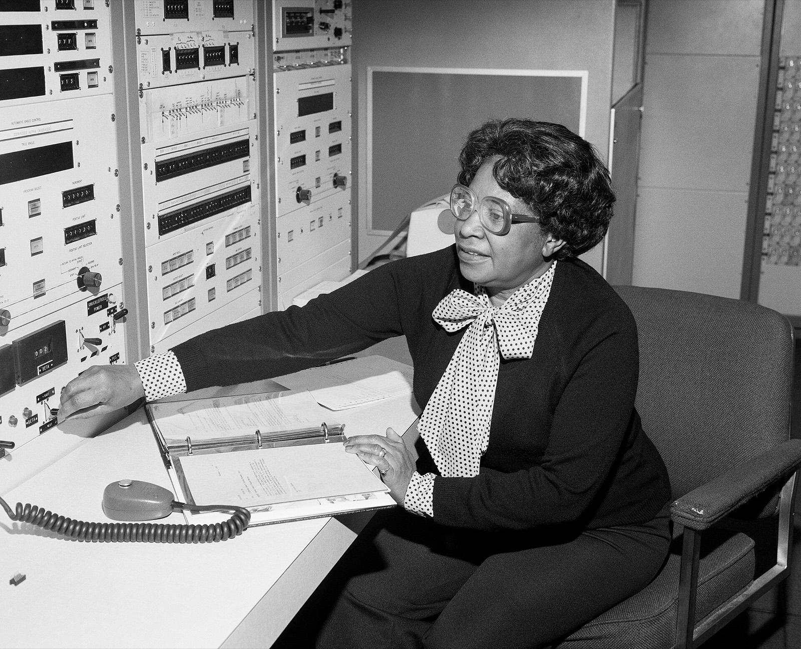
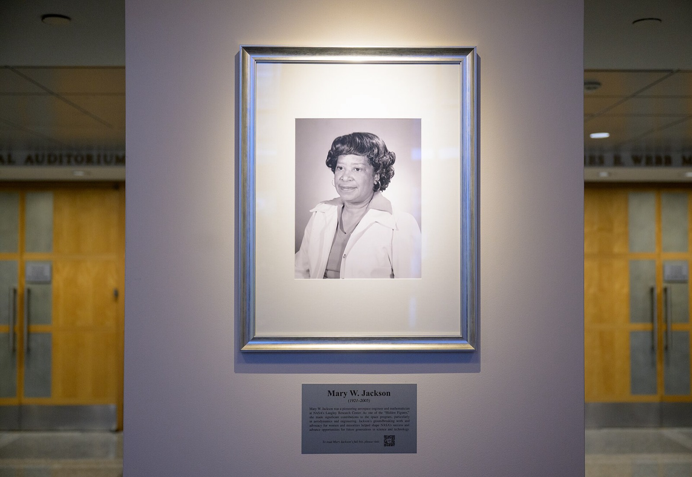

Nasce em Hampton, Virgínia, no dia 9 de abril.
NACA · NASA Langley · Hampton, Virgínia
Mary Jackson
A primeira engenheira negra da NASA. Ela estudou como o ar se comporta acima da velocidade do som, numa época em que a lei dizia onde ela podia sentar, comer e estudar.
Mach 2,0
Mova o cursor sobre o túnel para mudar a velocidade
Em 1958, numa Virgínia separada por lei entre brancos e negros, uma mulher negra fez o que diziam que ela não podia fazer. Ela se tornou engenheira da NASA. E passou o resto da vida abrindo a mesma porta para outras pessoas.

Seção 1 · 1921–1951
Nascida em Hampton
Mary Winston nasceu em 9 de abril de 1921, em Hampton, na Virgínia. Ao terminar a escola em 1937, com as notas mais altas, seguiu para o Hampton Institute, uma universidade para estudantes negros.
Em 1942 ela se formou com dupla graduação em Matemática e Ciências Físicas. Antes de chegar à ciência aeronáutica, deu aulas de matemática para crianças negras em Maryland, trabalhou como recepcionista, guarda-livros e secretária do Exército dos EUA.
Talento não faltava. O que faltava eram portas abertas para uma mulher negra no sul dos Estados Unidos.
- Nome
- Mary Winston Jackson
- Nascimento
- 09.04.1921
- Formação
- B.S. Matemática e Ciências Físicas
- Família
- Casada com Levi Jackson; 2 filhos
Seção 2 · As leis Jim Crow
Uma linha no meio de tudo
No sul dos EUA, as chamadas leis Jim Crow separavam pessoas negras e brancas em escolas, ônibus, restaurantes, bebedouros e banheiros. Placas com White e Colored marcavam onde cada um podia estar.
1951 · West Area Computing
As “computadoras”
Em 1951 Mary entrou no laboratório Langley da NACA, a agência que depois virou NASA. Ela foi para a West Area Computing, um grupo de matemáticas negras que faziam à mão os cálculos dos engenheiros. Trabalhavam separadas das colegas brancas, com refeitório e banheiros próprios.
Liderança
Dorothy Vaughan
A chefe do grupo era Dorothy Vaughan, outra pioneira. Ela lutava para que suas matemáticas recebessem as promoções que mereciam. Foi nesse ambiente que Mary começou a mostrar do que era capaz.

Seção 3 · 1953
Dentro do túnel supersônico
Em 1953 o engenheiro Kazimierz Czarnecki levou Mary para trabalhar com ele no Túnel de Pressão Supersônico de 4 por 4 pés. Lá, o ar era soprado a velocidades maiores que a do som contra modelos de aviões e foguetes.
Fig. 2 Mary Jackson com um modelo no túnel de vento da NASA Langley, 1977. Foto: NASA
Seção 4 · O obstáculo
Para ser engenheira, ela precisou de permissão para entrar numa sala de aula.
Czarnecki percebeu o talento de Mary e a incentivou a fazer o curso de formação para engenheiros. Só havia um problema: as aulas de pós-graduação da Universidade da Virgínia aconteciam dentro da Hampton High School, uma escola só para brancos.
Mary fez um pedido formal à cidade de Hampton para poder estudar ali. Conseguiu. Assistiu às aulas, completou os cursos e, em 1958, foi promovida a engenheira aeroespacial.
Ela foi a primeira mulher negra engenheira da NASA.
“Eu não posso mudar a cor da minha pele. Então não tenho escolha a não ser ser a primeira.”
Fala da personagem Mary Jackson no filme Estrelas Além do Tempo (2016), ao pedir ao juiz para estudar na escola.
Seção 5 · Experimente
O que Mary estudava
Seu primeiro relatório técnico, de 1958, estudou como o ângulo do nariz de um cone e o número de Mach mudam o fluxo de ar ao redor dele. Acima da velocidade do som, o ar não consegue “avisar” o objeto que está chegando e se comprime de repente numa onda de choque. Mexa nos controles e veja.
TÚNEL 4×4 FT · SIMULAÇÃO
CHOQUE OBLÍQUO
1,0 = velocidade do som (≈ 1.235 km/h ao nível do mar)
Narizes mais pontudos cortam o ar com choques mais fracos
- Ângulo da onda de choque
- —
- Velocidade
- —
Ref. Czarnecki, K. R. & Jackson, M. W. Effects of Nose Angle and Mach Number on Transition on Cones at Supersonic Speeds. NACA TN 4388, 1958.
Simulação simplificada para fins didáticos (modelo de choque oblíquo, γ = 1,4).
Seção 6 · Em números
34anos na NACA/NASA, de 1951 a 1985
≈12relatórios técnicos publicados como autora ou coautora
30+anos como líder de escoteiras, ensinando ciência a meninas
1ªengenheira negra da história da NASA
Seção 7 · Linha do tempo
Uma vida em 11 datas
Forma-se em Matemática e Ciências Físicas no Hampton Institute.
Entra na NACA como “computadora” no grupo segregado West Area Computing.
Começa a trabalhar com Kazimierz Czarnecki no túnel de vento supersônico.
Torna-se a primeira engenheira negra da NASA e publica seu primeiro relatório.
Deixa a engenharia para dirigir o Programa Federal para Mulheres em Langley.
Aposenta-se depois de 34 anos de carreira.
Morre em 11 de fevereiro, aos 83 anos.
Livro e filme Estrelas Além do Tempo contam sua história ao mundo. Janelle Monáe a interpreta.
Recebe, após a morte, a Medalha de Ouro do Congresso dos EUA.
A sede da NASA em Washington passa a se chamar Mary W. Jackson NASA Headquarters.
Seção 8 · 1979
Ela escolheu abrir a porta
Depois de anos como engenheira, Mary percebeu que mulheres e pessoas negras continuavam sem conseguir promoções. Em 1979 ela tomou uma decisão rara: deixou a engenharia e aceitou um cargo de nível mais baixo para comandar o Programa Federal para Mulheres em Langley.
Ali ela ajudou mulheres e minorias a conseguir cargos de gestão e de engenharia. Fora do trabalho, ajudou crianças negras a construir um túnel de vento em miniatura para que elas vissem que a ciência também era delas.
“Temos que fazer algo assim para despertar o interesse delas pela ciência. Às vezes elas não sabem quantos cientistas negros existem, e nem conhecem as oportunidades de carreira até que seja tarde demais.”
Mary Jackson, anos 1970, em jornal local, sobre o túnel de vento que construiu com crianças

Seção 9 · Legado
O nome dela agora está na porta da frente.
Em 2020 a NASA anunciou que sua sede em Washington levaria o nome de Mary W. Jackson. Em fevereiro de 2021 as letras foram instaladas na fachada. Em 2024, seu retrato foi inaugurado no prédio.

Seção 10 · 20 de novembro
Por que falar de Mary Jackson no Dia da Consciência Negra?
Memória
O 20 de novembro lembra Zumbi dos Palmares e a resistência do povo negro no Brasil. Por décadas, a história de Mary e de suas colegas ficou fora dos livros. Lembrar é uma forma de reparação.
Representatividade
Mary sabia que uma criança só sonha com o que consegue imaginar. Por isso dedicou anos a mostrar para jovens negros que ciência e engenharia também eram lugares para eles.
Racismo estrutural
O obstáculo de Mary não era falta de capacidade. Era um sistema de leis e costumes feito para excluir. Entender isso ajuda a reconhecer as barreiras que ainda existem hoje, aqui e lá fora.
Seção 11 · Teste o que você aprendeu
Quiz rápido
Pergunta 1 de 4